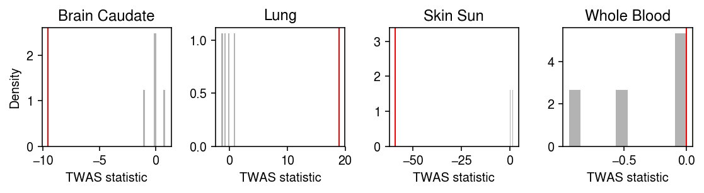

TWAS pipeline
Table of Contents
Introduction
Here, we use the fitted fqtl models to perform TWAS of 114 traits
(Barbeira et al 2018).\(
\DeclareMathOperator\N{N}
\newcommand\mU{\mathbf{U}}
\newcommand\md{\mathbf{D}}
\newcommand\mi{\mathbf{I}}
\newcommand\mr{\mathbf{R}}
\newcommand\mv{\mathbf{V}}
\newcommand\mx{\mathbf{X}}
\newcommand\vb{\mathbf{b}_t}
\newcommand\veta{\boldsymbol{\eta}_t}
\newcommand\vy{\mathbf{y}}
\newcommand\vz{\mathbf{z}}
\)
Setup
import glob import itertools as it import numpy as np import os.path import os.path import pandas as pd import pyplink import scipy.linalg as sl import scipy.sparse as ss import scipy.special as sp import scipy.stats as st import sqlite3 import tabix
%matplotlib inline %config InlineBackend.figure_formats = set(['retina'])
import colorcet import matplotlib import matplotlib.pyplot as plt plt.rcParams['font.family'] = 'Nimbus Sans' plt.rcParams['figure.facecolor'] = 'w'
Data
Pre-process the summary statistics
The GTEx consortium provided summary statistics in hg38. liftover back to
hg19 to combine with v6p models.
find /broad/compbio/data/gtex_gwas_hg38_tabix/ -name "*.bed.gz" >manifest
qsub -cwd -terse -V -sync n -j y -N liftover -S /bin/bash -t 36 -l h_vmem=4G set -e function lift () { in=gtex-gwas-hg19/$(basename $1 .bed.gz).hg38 zcat $1 | awk -vOFS='\t' 'NR > 1 {print $1, $2, $3, $4"|"$5"|"$6"|"$7}' >$in out=gtex-gwas-hg19/$(basename $1 .bed.gz).hg19 liftOver $in /broad/compbio/data/gtex_eqtl_tabix/hg38ToHg19.over.chain.gz $out $out.unmapped sort -k1,1 -k2,2n $out | tr '|' '\t' | bgzip >gtex-gwas-hg19/$(basename $1) tabix gtex-gwas-hg19/$(basename $1) } readarray -O1 tasks <manifest lift ${tasks[$SGE_TASK_ID]}
AD replication data
Download ADGC phase 2 (https://www.niagads.org/datasets/ng00076)
curl -sL "https://www.niagads.org/system/tdf/public_docs/ADGC2_ModelB_METAL_COMMON.InvVar.results.formatted_p-value_only.txt?file=1&type=field_collection_item&id=100&force=" -o adgc2.txt
gzip adgc2.txt
The data is on hg19 (GHCr37).
zcat adgc2.txt.gz | awk 'NR == 2 {split($1, a, ":"); print a[2]; exit}' | xargs -I{} zgrep -wm1 {} /broad/compbio/lward/incoming/dbSNP/hg19_b137/bed_chr_1.txt.gz
The publicly available data does not have \(z\)-scores or odds ratios.
Download GWAX summary statistics (Liu et al. 2017).
qsub -terse -cwd -V -j y -sync n
curl -sOL "http://gwas-browser.nygenome.org/downloads/gwas-browser/AD.gwax.assoc.gz"
The data is on hg19.
zgrep -wm1 rs144155419 /broad/compbio/lward/incoming/dbSNP/hg19_b137/bed_chr_1.txt.gz
Convert \(p\)-values to \(z\)-scores and format the data.
data = pd.read_csv('/broad/hptmp/aksarkar/AD.gwax.assoc.gz', sep=' ') data['chr'] = data['CHR'].apply(lambda x: f'chr{x}') data['start'] = data['BP'] # Important: we removed indels from GTEx data['end'] = data.apply(lambda x: x['BP'] if len(x['A1']) == len(x['A2']) == 1 else np.nan, axis=1).astype('Int64') data['zscore'] = np.sqrt(st.chi2(1).sf(data['P'])) * np.sign(np.log(data['OR'])) data['pval'] = data['P'] (data[['chr', 'start', 'end', 'A1', 'A2', 'zscore', 'pval']] .dropna() .to_csv('/broad/hptmp/aksarkar/gtex-gwas-hg19/ad-gwax-hg37.bed', index=None, header=None, sep='\t'))
qsub -cwd -terse -V -sync n -j y -N tabix -S /bin/bash
set -e
bgzip /broad/hptmp/aksarkar/gtex-gwas-hg19/ad-gwax-hg37.bed
tabix /broad/hptmp/aksarkar/gtex-gwas-hg19/ad-gwax-hg37.bed.gz
Prepare the genotype matrices
Extract genotypes within 1 megabase of the TSS for each gene. Genes are indexed in the manifest.
awk '$6 >= 10' /broad/compbio/aksarkar/projects/gtex-fqtl/data/fqtl-*-valid.genes.txt >manifest qsub -cwd -V -terse -sync n -j y -N plink -t 1-100 -l h_vmem=2G awk -vn=$SGE_TASK_LAST -vi=$SGE_TASK_ID 'NR % n == i - 1 {w = 1000000; ub = $4 + w; if ($4 > w) {lb = $4 - w} else {lb = 0} system("plink --memory 2000 --bfile /broad/compbio/data/GTEx/GTEx_restricted/v6_plink/BED_qc/chr"$3" --make-bed --chr "$3" --from-bp "lb" --to-bp "ub" --out "$1)}' manifest
Results
APOE example
Extract the fqtl model for APOE.
gene_id = 49282 prefix = f'/broad/compbio/ypp/gtex/analysis/fqtl-gtex/result/fqtl-std/{gene_id}/50' snp_annot = pd.read_csv(f'{prefix}/fqtl.snp.info.gz', sep='\t', header=None) snp_lodds = pd.read_csv(f'{prefix}/fqtl.snp.lodds.txt.gz', sep='\t', header=None) snp_lodds.index = snp_annot[3] tis_annot = pd.read_csv(f'{prefix}/fqtl.tis.info.gz', sep='\t', header=None, index_col=0) tis_lodds = pd.read_csv(f'{prefix}/fqtl.tis.lodds.txt.gz', sep='\t', header=None) tis_lodds.index = tis_annot[1].apply(lambda x: x.rsplit('_', maxsplit=1)[0]) keep = (sp.expit(snp_lodds) > .95).any(axis=0) L = pd.read_csv(f'{prefix}/fqtl.snp.theta.txt.gz', sep='\t', header=None) L.index = snp_annot[3] F = pd.read_csv(f'{prefix}/fqtl.tis.theta.txt.gz', sep='\t', header=None) F.index = tis_annot[1].apply(lambda x: x[:-9]) B = L.loc[:,keep].dot(F.loc[:,keep].T)
Look at the fitted fqtl loadings and factors.
cm = plt.get_cmap('Dark2') plt.clf() plt.gcf().set_size_inches(7.5, 5) query = F.loc[:,keep] grid = np.arange(query.shape[0]) plt.axhline(y=0, lw=1, color='0.7') plt.grid(axis='x', color='0.7') for i, k in enumerate(query): plt.bar(grid, query[k], width=0.9 , color=cm(i), label=f'Factor {i}', zorder=3) plt.legend() plt.xticks(grid, stat.index, rotation=90) plt.xlabel('Tissue') plt.ylabel('Factor weight') plt.title('APOE') plt.tight_layout()
Extract the sqtl models for APOE.
chromosome = 19 prefix = f'/broad/compbio/ypp/gtex/analysis/fqtl-gtex/result/sqtl/{chromosome}/{gene_id}' sqtl_tis_annot = pd.read_csv(f'{prefix}/sqtl.tis.info.gz', sep='\t', header=None, index_col=0) sqtl_snp_annot = pd.read_csv(f'{prefix}/sqtl.snp.info.gz', sep='\t', header=None) sqtl_snp_lodds = pd.read_csv(f'{prefix}/sqtl.effect.lodds.txt.gz', sep='\t', header=None) sqtl_snp_lodds.index = snp_annot[3] sqtl_snp_lodds.columns = sqtl_tis_annot[1].apply(lambda x: x.rsplit('_', maxsplit=1)[0]) sqtl_B = pd.read_csv(f'{prefix}/sqtl.effect.theta.txt.gz', sep='\t', header=None) sqtl_B.index = snp_annot[3] sqtl_B.columns = sqtl_tis_annot[1].apply(lambda x: x.rsplit('_', maxsplit=1)[0])
Load the cis-genotypes around APOE.
with pyplink.PyPlink(f'/broad/hptmp/aksarkar/geno/{gene_id}') as f: fam = f.get_fam() bim = f.get_bim() x = np.ma.masked_equal(np.array([row for _, row in f.iter_geno()]).T, -1).astype(float) x -= x.mean() x /= x.std() x = pd.DataFrame(x, index=fam['fid'], columns=bim['pos'])
Read the GWAS summary statistics.
genes = pd.read_csv('/broad/hptmp/aksarkar/geno/manifest', sep='\t', header=None, index_col=0) f = tabix.open('/broad/hptmp/aksarkar/gtex-gwas-hg19/imputed_IGAP_Alzheimer.bed.gz') row = genes.loc[gene_id] gwas_z = (pd.DataFrame(f.query(f'chr{row[2]}', int(row[3] - 1e6), int(row[3] + 1e6))) .astype(dict(enumerate([str, int, int, str, str, float, float])))) gwas_z.head()
0 1 2 3 4 5 6 0 chr19 44409410 44409411 T A 2.4210 0.0155 1 chr19 44410383 44410384 A G -0.1969 0.8440 2 chr19 44410421 44410422 G A -1.4283 0.1530 3 chr19 44410613 44410614 A G -1.6997 0.0892 4 chr19 44410845 44410846 A G -2.3529 0.0186
Merge the tissue-specific effect sizes and the GWAS summary statistics.
twas_data = gwas_z.merge(snp_annot, left_on=[2, 3, 4], right_on=[3, 4, 5]).set_index('2_x') twas_data.head(n=1)
2 3 4 0_x 1_x 3_x 4_x 5_x 6 0_y \ 2_x 44410422 44410422 G A chr19 44410421 G A -1.4283 0.153 19 1_y 2_y 3_y 4_y 5_y 2_x 44410422 19_44410422_A_G_b37 0 44410422 G A
Plot the TWAS loadings and the GWAS \(z\)-scores.
gene_info = pd.read_csv('/broad/hptmp/aksarkar/geno/manifest', sep='\t', header=None, index_col=0)
cm = plt.get_cmap('Dark2') plt.clf() fig, ax = plt.subplots(3, 1, sharex=True) fig.set_size_inches(7, 4.5) query = sqtl_B.loc[:,(sp.expit(sqtl_snp_lodds) > .95).any(axis=0)] pos = query.index / 1e6 for i, k in enumerate(query): keep_snps = sp.expit(sqtl_snp_lodds[k]) > .95 ax[0].scatter(pos[keep_snps], query[k][keep_snps], s=4, color=cm(1 - i), label=k, zorder=3) query = L.loc[:,keep].align(twas_data, axis=0, join='inner')[0] query_lodds = snp_lodds.loc[:,keep].align(twas_data, axis=0, join='inner')[0] pos = query.index / 1e6 for i, k in enumerate(query): keep_snps = query_lodds[k] > sp.logit(.95) ax[1].scatter(pos[keep_snps], query[k][keep_snps], s=4, color=cm(i), label=f'Factor {i}', zorder=3) ax[2].scatter(pos, twas_data['5_x'], s=1, color='k', zorder=3, label=None) for a in ax: for t in pos[keep_snps]: a.axvline(t, lw=0.5, c='0.85') a.axhline(y=0, lw=1, color='0.7') a.axvline(gene_info.loc[gene_id,3] / 1e6, c='b', lw=0.5) ax[0].set_ylabel('sQTL effect size') ax[0].legend(frameon=False, markerscale=2, handletextpad=0, loc='center left', bbox_to_anchor=(1, .5)) ax[1].set_ylabel('fQTL loading') ax[1].legend(frameon=False, markerscale=2, handletextpad=0, loc='center left', bbox_to_anchor=(1, .5)) ax[2].set_ylabel('AD GWAS $z$-score') ax[1].set_xlabel('Genomic position (MB)') ax[0].set_title('APOE') fig.tight_layout()
Align the fqtl model and the GWAS summary statistics.
B = B.loc[twas_data['3_y']] B = B.loc[~B.index.duplicated(keep='first')] snp_lodds = snp_lodds.align(B, axis=0, join='inner')[0] z = twas_data['5_x'] z = z.loc[~z.index.duplicated(keep='first')] X = x.loc[:,twas_data['3_y']] X = X.loc[:,~X.columns.duplicated(keep='first')] u, d, vt = np.linalg.svd(X, full_matrices=False) d[d < 1e-4] = 0 R = pd.DataFrame(vt.T.dot(np.diag(np.square(d))).dot(vt) / X.shape[0], index=X.columns, columns=X.columns)
Compute the PIP for the tissue-specific effects.
\[ \Pr(b_{jt} \neq 0 \mid \cdot) = \sum_k \Pr(l_{jk} \neq 0 \mid \cdot) \Pr(f_{tk} \neq 0 \mid \cdot) \]
pip = sp.expit(snp_lodds.loc[:,keep]) @ sp.expit(tis_lodds.loc[:,keep]).T
Plot the permutation null distribution of the TWAS statistic.
\begin{align*} \vy &\sim \N(\veta a, \sigma^2 \mi), \qquad \veta = \mx\vb\\ \hat{a} &= (\veta' \veta)^{-1} \veta' \vy\\ &= (\vb' \mx' \mx \vb)^{-1} \vb' \mx' \vy\\ &= \frac{\vb' \vz}{\vb' \mr \vb}, \qquad \vz = \mx' \vy / n, \mr = \mx' \mx / n \end{align*}np.random.seed(1) n_perm = int(1e6) pip_thresh = 0.95 # Hard threshold posterior mean B B_thresh = np.where(pip > pip_thresh, B, 0) stat = pd.Series(z @ B_thresh / (np.diag(B_thresh.T @ R @ B_thresh) + 1e-8), index=pip.columns) perm_stat = [] # Permute b_t by selecting new indices n_qtls = (pip > pip_thresh).sum(axis=0) for t in B: if n_qtls[t] == 0: perm_stat.append(np.repeat(0, n_perm)) continue data = np.repeat(B[t][pip[t] > pip_thresh], n_perm) row = np.random.choice(B.shape[0], replace=True, size=(n_qtls[t], n_perm)).ravel() col = np.repeat(np.arange(n_perm), n_qtls[t]) bt = ss.coo_matrix((data, (row, col)), shape=(B.shape[0], n_perm)).tocsr() perm_stat.append(z.values.reshape(1, -1) @ bt) perm_stat = np.vstack(perm_stat) perm_logp = -np.log10((np.square(stat.values).reshape(-1, 1) <= np.square(perm_stat)).mean(axis=1) + 1e-8)
tis = ['Whole_Blood', 'Lung', 'Skin_Sun_Exposed_Lower_leg', 'Brain_Caudate_basal_ganglia'] idx = stat.index.isin(tis) plt.clf() fig, ax = plt.subplots(1, 4) fig.set_size_inches(8, 2.25) for a, s, p, t in zip(ax, stat.loc[idx], perm_stat[idx].T, stat.index[idx]): a.hist(p, density=True, color='0.7') a.axvline(s, lw=1, c='r') a.set_title(' '.join(t.split('_')[:2])) a.set_xlabel('TWAS statistic') ax[0].set_ylabel('Density') fig.tight_layout()

Implement adaptive permutation (Che et al. 2014).
max_success = 10 block_size = int(1e3) max_perm = int(1e7) n = X.shape[0] pip_thresh = 0.95 B_thresh = pd.DataFrame(np.where(pip > pip_thresh, B, 0), index=B.index, columns=B.columns) n_qtls = (pip > pip_thresh).sum(axis=0) num_success = 0 num_perm = 0 pvals = [] for t in B: if n_qtls[t] == 0: pvals.append(1) continue stat = z @ B_thresh[t] / B_thresh[t].T @ R @ B_thresh[t] for _ in range(max_perm // block_size): perm_stat = [] data = np.repeat(B_thresh[t][pip[t] > pip_thresh], block_size) row = np.random.choice(B_thresh.shape[0], replace=True, size=(n_qtls[t], block_size)).ravel() col = np.repeat(np.arange(block_size), n_qtls[t]) bt = ss.coo_matrix((data, (row, col)), shape=(B_thresh.shape[0], block_size)).tocsr() num = (z.values.reshape(1, -1) @ bt) den = (R.values @ bt.power(2)).sum(axis=0, keepdims=True) perm_stat.append(num / den) perm_stat = np.vstack(perm_stat) num_success += (np.square(perm_stat) >= np.square(stat)).sum() num_perm += block_size if num_success >= max_success: pvals.append(num_success / num_perm) break else: pvals.append((num_success + 1) / (max_perm + 1)) pvals = np.array(pvals)
plt.clf() fig, ax = plt.subplots(2, 1, sharex=True) fig.set_size_inches(8, 6) grid = np.arange(B.shape[1]) ax[0].bar(grid, z @ B_thresh / (np.diag(B_thresh.T @ R @ B_thresh) + 1e-8), width=.9, color='k', zorder=3) ax[0].set_ylabel('TWAS statistic') ax[1].bar(grid, -np.log(pvals), width=.9, color='k', zorder=3) for a in ax: a.set_xticks(grid) a.axhline(y=0, lw=1, color='0.7') a.grid(axis='x', color='0.7') ax[0].set_title('APOE') ax[1].set_xticklabels(B.columns, rotation=90) ax[1].set_xlabel('Tissue') ax[1].set_ylabel(r'$-\log_{10}(p)$') fig.tight_layout()
We expect an association between APOE gene expression in brain and AD; however, we also find significant associations in several other tissues. These associations appear to be driven by coding variants in APOE which are predicted to have an effect in tissues other than brain. This result could be expected, following the argument that strong effects on gene expression of disease relevant tissues should not be tolerated by natural selection, while strong effects in irrelevant tissues could be tolerated (Wang et al. 2018).
Run TWAS
Run one chunk of the pipeline.
mkdir -p tasks
awk '{print >"/broad/hptmp/aksarkar/tasks/chunk-" int((NR - 1) / 1000) ".txt"}' geno/manifest
qsub -cwd -V -terse -j y -sync n -N test -l h_vmem=1G,h_rt=0:30:00 source activate /broad/compbio/aksarkar/.conda/envs/fqtl python /broad/compbio/aksarkar/projects/gtex-fqtl/twas.py /broad/hptmp/aksarkar/gtex-gwas-hg19/imputed_IGAP_Alzheimer.bed.gz /broad/hptmp/aksarkar/tasks/test.txt /broad/hptmp/aksarkar/twas/test
Run the entire pipeline.
find /broad/hptmp/aksarkar/gtex-gwas-hg19 -name "*.bed.gz" >/broad/hptmp/aksarkar/gtex-gwas-hg19/manifest parallel --dry-run 'python /broad/compbio/aksarkar/projects/gtex-fqtl/twas.py {1} /broad/hptmp/aksarkar/tasks/chunk-{2}.txt /broad/hptmp/aksarkar/twas/{=1 use File::Basename; $_ = basename($_); s/.bed.gz//=}-{2}' :::: /broad/hptmp/aksarkar/gtex-gwas-hg19/manifest ::: $(seq 0 28) >/broad/hptmp/aksarkar/twas/joblist
qsub -cwd -V -terse -j y -sync n -N twas -S /bin/bash -l h_vmem=4G,h_rt=4:00:00 -t 1 readarray -O1 tasks < /broad/hptmp/aksarkar/twas/redo source activate /broad/compbio/aksarkar/.conda/envs/fqtl exec ${tasks[$SGE_TASK_ID]}